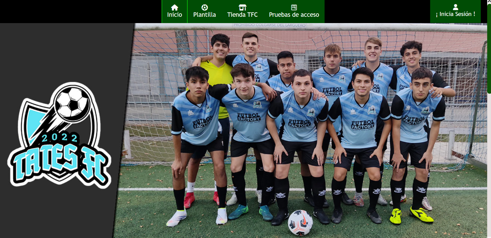

CRUD (ORDENADORES)
Esta pagina fue creada en el tercer trimestre, como base PHP y la conexion a una base de datos, es el tan conocido CRUD (Create, Read, Update and Delete), en este caso con la tematica de una tienda de ordenadores.
GITLAB: Pulsa aquí
Ir a la pagina >>>
PFC (TATES FC)
Este proyecto se inicio desde principio de curso, y a medida de las clases ha ido mejorando hasta lograr esta ultima version, una pagina web completa, con PHP, CSS, HTML, CSV, conexion a base de datos, etc. Se centra en un equipo de futbol llamado: "Tates FC".
